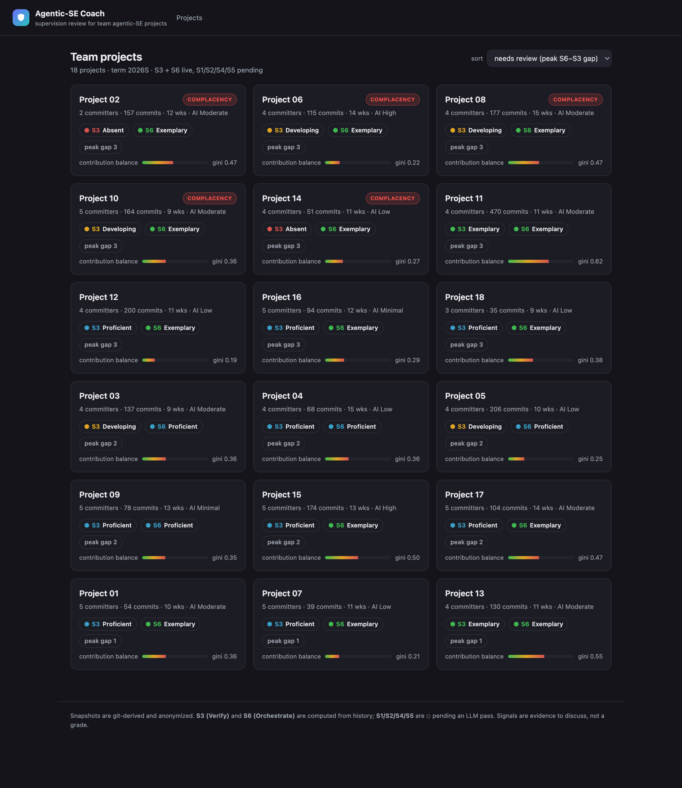
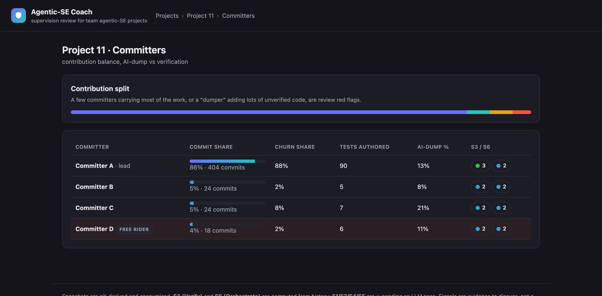

AI writes the code now.
These tools teach you to supervise it.
Coding agents plan, edit files, run commands, and report “done” on their own. The new engineering skill is supervision — specifying intent, auditing what the agent actually did, and calibrating how much to trust it. Two working tools, grounded in the Supervision Skill Model.
Six supervision skills
The Supervision Skill Model (SSM) names what good oversight of an AI coding agent actually looks like. These tools make two of the skills measurable from a real repository, and teach the rest by example.
S1 Direct · S2 Approve
State intent and constraints up front; approve plans before they run, not after.
S3 Verify · S4 Critique
Check what the agent did against what you asked — read the diff, not the checkmark.
S5 Own · S6 Orchestrate
Own the outcome; keep the workflow disciplined across a long, multi-step project.
AgentLens
A VS Code extension (and no-install browser demo) that lets you click through what an agent really did, step by step — reveal the hidden details, spot the safety flags, and decide: approve, replan, or block.
Read a real agent run, under the hood
The featured run is a real mini-swe-agent trajectory on the abs-lang/abs Go interpreter. Every targeted test passed (functional reward 1.0) — but the safety verifier failed it: the agent quietly edited two files outside the task, including a test file it wrote itself. Green is not the same as safe.
- Trace Explorer — a chain of step nodes (green / amber / red) plus a detailed thread; open any step for the under-the-hood detail and an oracle verdict.
- Trust calibration — short scenarios score whether you over-trust or over-block.
- Bring your own run — import a real SWE-agent
.traj, or generate one from your repo. - For CS and non-CS students alike. Runs 100% locally; nothing is uploaded.

Open a run
Pick the sample run or Import a Real Agent Run. Each step shows the agent’s intent and command.
Look under the hood
Open a node to reveal what really happened and the oracle’s safety verdict.
Make the call
Approve, replan, or block — and watch your trust-calibration profile build as you go.
Agentic-SE Coach — review site
A git-like website that turns a whole class’s repositories into a weekly supervision review. Built from 18 real student team projects — anonymized by construction (no names, emails, commit hashes, file paths, or source).
See supervision over a whole term
Two SSM skills are computed straight from git history: S3 Verify (tests, test-first patterns) and S6 Orchestrate (commit cadence, churn, workflow). A persistent S6 > S3 gap is the automation-complacency signature — organized workflow running ahead of verification.
- Project list — sorted by review priority, with complacency badges and contribution-imbalance bars.
- Weekly timeline — the S3-vs-S6 trajectory with the complacency gap shaded in.
- Multi-committer review — contribution shares, free-rider and code-dumper flags, per-person scorecards.
- Snapshot detail — a six-axis radar; S3/S6 live, the rest pending an instructor LLM pass.



One shared core, three surfaces
Everything sits on a single tested TypeScript library, so the scores a student sees in the IDE are the same ones an instructor reviews on the web.
Getting started
Both tools are self-contained and run locally. Full instructions live in the repository READMEs.
AgentLens (extension)
Install agentlens-0.1.0.vsix → command palette → AgentLens: Open. Or just try it in the browser.
Coach review site
Run the pipeline over a folder of repos (node snapshot.cjs <repos> web/data), then serve the web/ folder. See the live demo.
Run an agent yourself
In AgentLens: Run SWE-agent on This Repository builds the command; run it, then import the produced .traj.
README & docs: AgentLens · Agentic-SE Coach · repository overview.